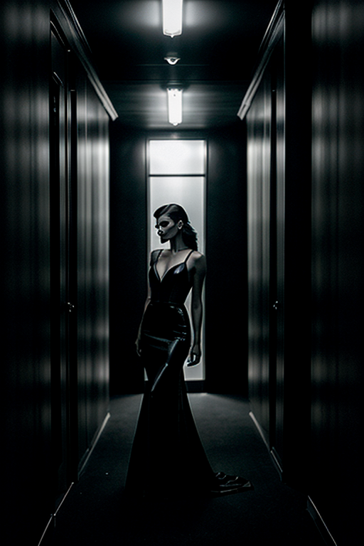
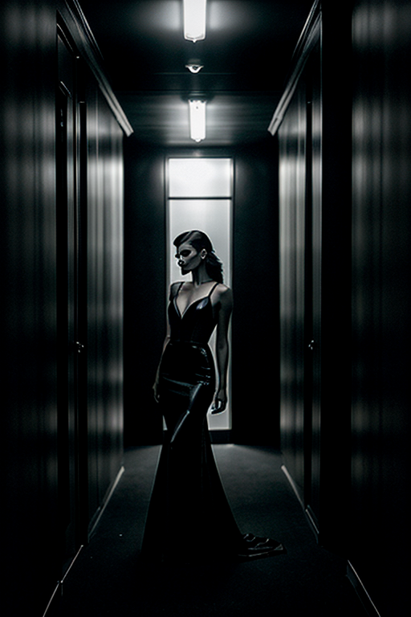

This set explores dark girl horror cosplay through urban aesthetics and bold tone under neon lights. Compositions use symmetry with nature scene, keeping focus clear and tidy. Details like evening dress styling and balanced colors make browsing easy.
Browse dark images. Page 6 of curated dark-style portrait collection.


 



Here we highlight page6, aiming for clean structure, quick scanning, and useful context. Internal navigation leads to related items with comparable tone or composition. This reduces bounce and supports exploration within the same theme. The image aims to deliver a straightforward visual impression while keeping the file lightweight. A brief explanation clarifies the subject and lighting so visitors can quickly decide where to go next. Bookmark the page if it’s useful; updates aim to improve clarity, speed, and overall structure over time. The image aims to deliver a straightforward visual impression while keeping the file lightweight. A brief explanation clarifies the subject and lighting so visitors can quickly decide where to go next. Bookmark the page if it’s useful; updates aim to improve clarity, speed, and overall structure over time. Alt text and headings are optimized to make the content accessible and to provide consistent cues across the site. Subtle differences in wording help avoid duplication across similar pages.